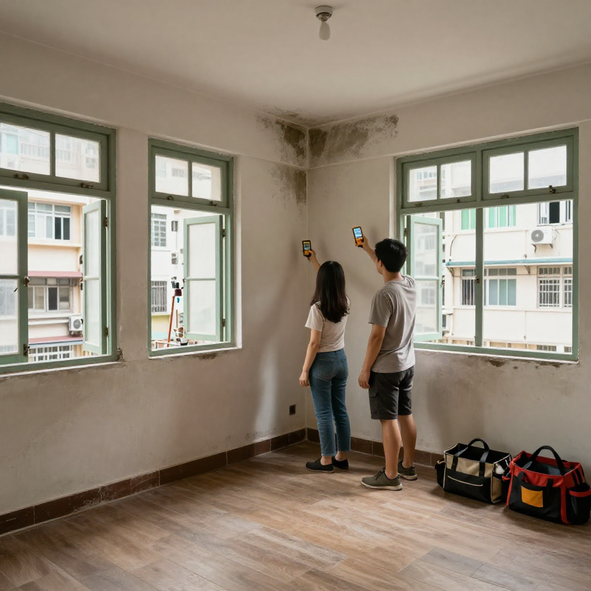
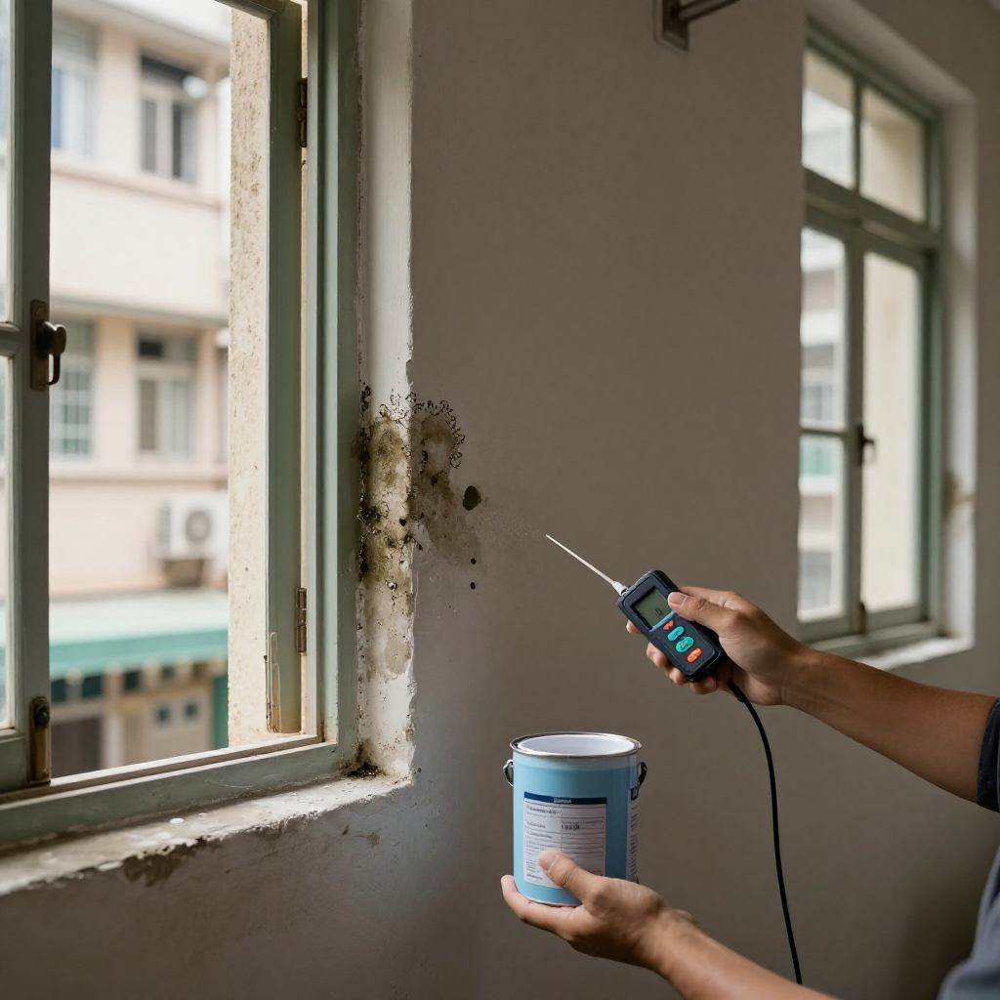
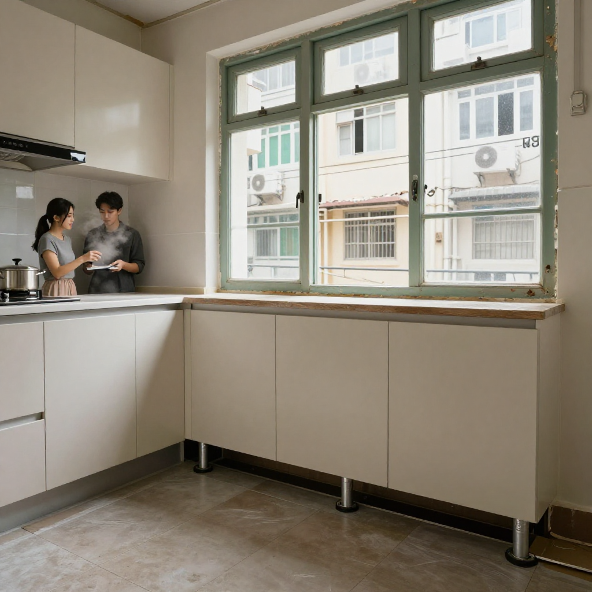
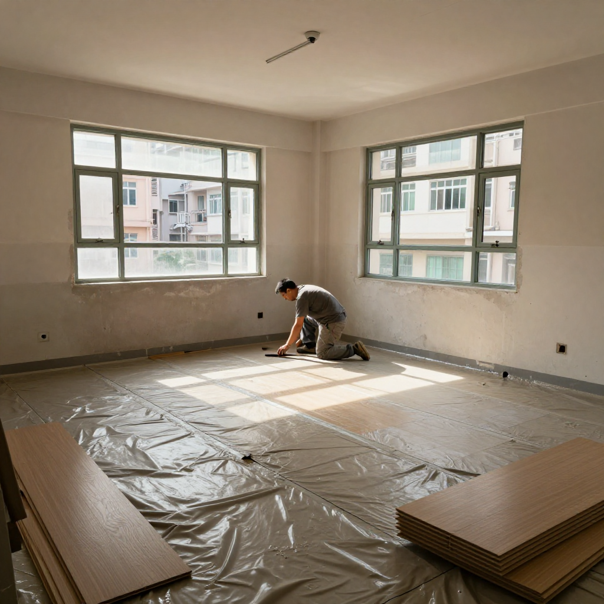

油麻地老街新居：張丹楓帶阿波師傅同你拆解400呎舊樓防潮

📍 場景：油麻地舊樓｜主講：張丹楓（8年全屋定制）｜設計溝通：雲蕾｜街坊幫手：阿波師傅｜WhatsApp 報價：852 5190 2328
我係張丹楓，做咗8年裝修，專做香港小戶型定制家具。我太太雲蕾負責設計同客戶溝通，我負責工廠同現場安裝。今日呢單喺油麻地，一個400呎舊單位，業主係啱啱結婚嘅阿杰同阿莉，預算有限，但對新屋期望好高。
一、入門條數唔啱數：濕度80%，唔做防潮等於倒錢落海
「丹楓，客廳牆面發霉，又怕夏天濕氣蒸上來，點搞最靈？」阿杰一開口就指住牆角發黑嘅霉點。阿莉跟住補句：「我哋預算好緊，防潮呢筆錢可唔慳得？」
呢個就係矛盾位：唔做，住落發霉返工仲貴；做，又驚超支。我冇即刻報價，先掏出濕度計：「先睇數，唔估。」一量，客廳相對濕度80%，遠超舒適嘅60%。兩公婆個樣即刻沉咗。
街坊阿波師傅啱啱經過，探頭入嚟：「呢棟樓我熟，外牆滲水加樓板防水層老化，十居其九都係咁。聽丹楓嘅，佢唔會呃你。」有街坊一句，兩公婆先肯坐低聽。

二、雲蕾拆解預算：防潮底漆係保險，唔係豪裝
阿莉最擔心係錢：「水性環氧樹脂底漆，聽個名都貴。」雲蕾攤開張單同佢逐項對：「你聽我講，防潮底漆滲入混凝土毛細孔做阻濕層，基層乾透先上，唔會起泡。呢筆錢係保險——唔做，半年後拆牆重做貴三倍。」
阿杰追問：「咁有冇補貼？」我話：「坊間有啲樓宇節能同維修資助，唔同時期唔同名額，我唔敢包你攞到；你當冇，先按自己預算做最關鍵嘅三樣：底漆、防潮墊、櫃腳。」咁一拆，兩公婆終於點頭：錢要使得其所，唔係使得多。
三、廚房重災區：普通夾板櫃腳唔用得，轉鋁合金加膠墊
去到廚房，我指住櫃腳：「呢度煮飯蒸汽最勁，普通夾板櫃腳長期掂水會變形發霉。我哋轉防水鋁合金櫃腳，底部加膠墊，防潮又防蟲。」雲蕾跟住補：「吊櫃背面留風道，熱氣水汽唔好困喺密封空間。通風間隙就係等空氣流動，濕氣唔積聚。」
我用尺量好，櫃腳同地面留2毫米通風間隙。阿莉睇住，終於笑：「原來唔係越封實越好。」

四、地板同收尾：防潮墊鋪平唔起皺，SPC地板最穩陣
下晝工人鋪防潮墊，我逐寸驗接縫，膠棒封死。「鋪平唔起皺，唔係之後鋪地板凹凸不平。」地板我建議實木複合或者防水石塑地板（SPC），潮濕環境尺寸穩，唔易翹。
阿杰問：「打風點算？」我話：「窗加防風條、夾膠玻璃，外牆裂縫及時補。天氣圖話未來一週可能有熱帶低壓，防潮同防風一齊預埋，唔使分兩次畀錢。」

五、收工一句：防潮唔係一次工程，係習慣
噴完最後一層防潮底漆，淡淡樹脂味混住海風。阿杰阿莉話：「多謝師傅，學識自己check濕度。」我抹汗笑：「記住，防潮唔係一次過，定期檢查、保持通風，間屋自然健康。」阿波喺門口揮手：「呢對後生交畀你哋，我放心。」
望住窗外街市，我同雲蕾講：每個香港家庭，都應該喺潮濕天氣有個乾爽嘅屋企。呢個就係我哋夫妻檔做定制嘅原因。
❓ 張丹楓答你：油麻地舊樓防潮三問
Q1：油麻地舊樓牆身發霉，第一步做咩？
先用濕度計驗數，搵濕氣來源（外牆滲水定防水層老化）。濕度長期超標唔處理，直接做飾面等於倒錢落海，霉會返發。
Q2：防潮底漆、防潮墊、SPC地板，預算有限點揀？
三樣都係關鍵：水性環氧樹脂底漆做阻濕層，防潮墊鋪平封縫，地板選防水SPC或實木複合。真係要慳，先保底漆同櫃腳，飾面可以後一步。
Q3：廚房櫃腳點解唔用普通夾板？
煮食蒸汽加拖地水，夾板長期掂水會變形發霉。轉防水鋁合金櫃腳加膠墊，留2毫米通風間隙，防潮防蟲，吊櫃背面同樣要留風道。
提示：圖片為 SiliconFlow Z-Image-Turbo AI 生成的場景示意圖，不是任何實際住戶單位或政府官方照片。樓宇資助計劃名稱與名額經常調整，申請前請向相關部門查詢最新安排；極端天氣安排請以香港天文台最新公布為準。